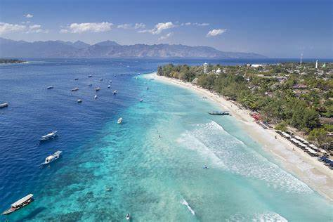
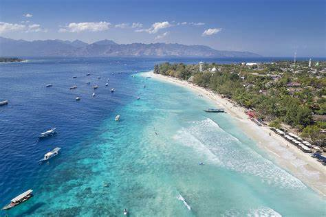

Gili Trawangan
Pulau ini jadi destinasi wisata utama di Lombok. Kombinasi udara segar khas laut, pantai putih yang bersih, air laut yang jernih, dan fasilitas lrrrrrengkap tentunya bikin wisatawan betah. Pulau ini tidak terlalu luas, jadi kita bisa mengitarinya dengan mudah menggunakan sepeda. Selain itu, dari pulau ini juga kita bisa dengan mudah menjangkau gili air dan gili meno yang letanya memang berdekatan. Jangan khawatir dengan fasilitas. Sekarang fasilitas di Gili trawangan sudah lengkap.
Pesona Gili Trawangan
Pulau ini jadi destinasi wisata utama di Lombok. Kombinasi udara segar khas laut, pantai putih yang bersih, air laut yang jernih, dan fasilitas lengkap tentunya bikin wisatawan betah. Pulau ini tidak terlalu luas, jadi kita bisa mengitarinya dengan mudah menggunakan sepeda. Selain itu, dari pulau ini juga kita bisa dengan mudah menjangkau gili air dan gili meno yang letanya memang berdekatan. Jangan khawatir dengan fasilitas. Sekarang fasilitas di Gili trawangan sudah lengkap.
Cara menuju Gili Trawangan
Menggunakan Fast Boat/Speed Boat Dari Bali
Melalui Pelabuhan Bangsal Atau Teluk Nara Di Lombok
Aktivitas di Gili Trawangan
Biasanya satu hal yang terpikir saat traveling; apa saja sih tempat favorit di lokasi, dan kegiatan apa aja yang bisa dilakukan? Di tempat ini, banyak hal yang bisa kita lakuin dan nikmati.
Pantai Gili Trawangan
Snorkeling Dan Diving
Menonton Presean Atau Stick Fighting
Mengelilingi Pulau Dengan Sepeda